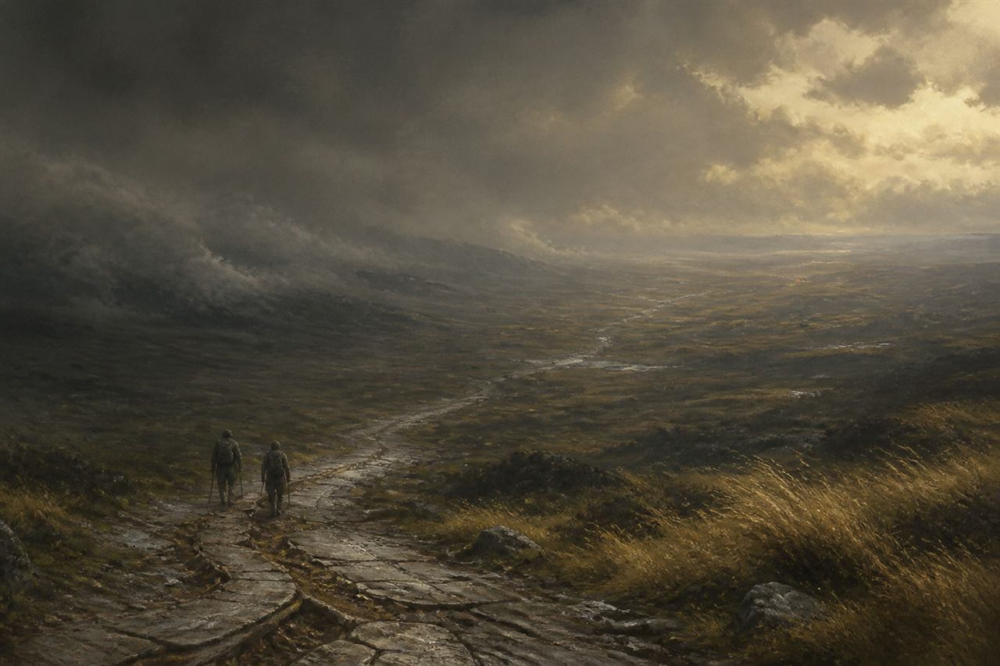

01
Public canon
Only deliberately reviewed, spoiler-safe Markdown files inside the repository's lore folder, published on the default branch and marked public-canon, count as Edravoss public canon.

Public lore
Edravoss is shaped by journeys into the unknown and by what people choose to bring home.
Enter EdravossThe foundation
Edravoss is a fantasy setting shaped by journeys into the unknown and by what people choose to bring home.
Its stories attend to individuals, communities, and the lasting consequences of difficult choices.
This first public entry establishes only that broad foundation. It names no character, place, faction, event, chronology, creature or artefact.
Read the source lore
How canon works
01
Only deliberately reviewed, spoiler-safe Markdown files inside the repository's lore folder, published on the default branch and marked public-canon, count as Edravoss public canon.
02
Questions and suggestions are welcome in GitHub Discussions. An idea does not become canon simply because somebody proposes it.
03
Game rules, designs, prototypes and unpublished stories remain private until Barry deliberately approves them for publication.